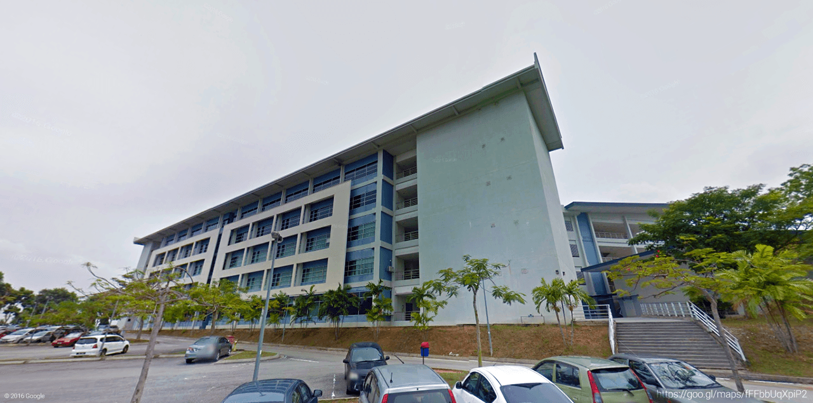

<link rel="import" href="bower_components/polymer/polymer.html">

<dom-module id="transport-page">
	<template>
		<style>
			:host {
				display: block;
			}
			.cyan{
				--paper-card-background-color: #4DD0E1;
			}
			.white{
				--paper-card-background-color: #fff;
			}
			.bluegrey{
				--paper-card-background-color: rgba(236,239,241,0.4);
			}
			#cover{
				background-image: url('images/cover_white.jpg');
			    background-size: contain;
			    background-repeat: no-repeat;
			    background-position: center; 
				max-width: 100%;
				height: 400px;
				margin: 0px auto 24px auto; 
				display: block;
			}
			paper-card{
				max-width: 1600px;
				width: 80%;
				margin: 0 auto;
				display: block;
				--paper-card-content: {
					padding: 48px 60px;
				};
			}
			#transport_title{
				max-width: 1600px;
				width: 80%;
				display: block;
				margin: 0 auto;
				padding-left: 48px;
				margin-top: 96px;
				margin-bottom: 36px;
				font-size: 45px;
				color: #78909c;
				font-weight: 400;
			}			
			#event-detail{
				color: rgba(0,0,0,0.7);
				font-size: 24px;
				margin-bottom: 68px;
				line-height: 32px;
				font-weight: 400;
			}
			#event-detail p{
				margin: 4px; 
			}
			#event-desc{
				color: rgba(0,0,0,0.7);
				font-size: 20px;
				line-height: 28px;
				padding: 28px 36px;
			}
			#transport-desc{
				max-width: 700px;
				color: rgba(0,0,0,0.7);
				padding: 24px 24px 48px 24px;
				margin: 0 auto;		
			}
			#event-desc a{
				color: #263238;
				font-weight: 500;
				text-decoration: none;				
			}
			#transport-desc a{
				color: #00838F;
				font-weight: 500;
				text-decoration: none;
			}
			#transport-desc p{	
				color: #4a4a4a;
			}
			#transport-desc h2{
				font-size: 30px;
				font-weight: 400;
			}
			#transport-desc h4{
				color: rgba(0,0,0,0.6);
				font-size: 24px;
				font-weight: 400;
				margin-top: 48px;
				margin-bottom: 8px;
			}
			#venue_img{
				max-width: 1600px;
				margin: 0 auto;
				width: 80%;
				display: block;
			}
			@media screen and (max-width: 840px) {
				paper-card{
					width: 100%;
				}
				google-map{
					max-width: 100%;
				}
				#cover{
					height: 280px;
				}
				#venue_img{
					width: 100%;
				}
				#event-desc{
					padding: 24px 0px;
					font-size: 18px;
				}
				#transport-desc{
					padding: 0px 12px 0px 12px;
				}
				#transport_title{
					margin-top: 48px;
					font-size: 36px;
					padding-left: 10px;
					font-size: 34px;
				}
			}

			@media screen and (max-width: 480px) {
				paper-card{
					--paper-card-content: {
						padding: 24px 30px;
					};
				}
				#event-detail{
					margin-bottom: 32px;
				}
				#cover{
					margin-top: 12px;
					background-image: url('images/cover_white_vertical.jpg');
				}

			}
		</style>
		<div id="transportPage">
			<h1 id="transport_title">Getting There</h1>
			<paper-card class="cyan">
				<div class="card-content">
					<div id="event-desc">
						We are hosting Google I/O Extended 2016 MMU Cyberjaya at the <a href="https://goo.gl/maps/k5jXHuwPc5M2" target="_blank">Facaulty Of Computing &amp; Informatics, Multimedia University</a>, Cyberjaya Campus. Multimedia University located 20 minutes away from the city center of Kuala Lumpur.
					</div>
				</div>
			</paper-card>
			<a href="https://goo.gl/maps/fFFbbUqXpiP2" target="_blank">
				
			</a>
			<paper-card class="bluegrey">
				<div class="card-content">
					<div id="transport-desc">
						<h2>Getting to Multimedia University</h2>
						<p>There are few ways to come to Multimedia University. Please take note this event ends at around 3:00AM, most of the public transportation are not operating at the hour.</p>
						<h4>KLIA Transit</h4>
						<p>If you are coming from outside Cyberjaya/Putrajaya, you need to take <a href="https://www.kliaekspres.com/">KLIA Transit</a> to Multimedia University. Fare starts from RM4.70 and up to RM25.00.</p>
						<p>Please take note that KLIA Transit does not go directly to Multimedia Universty. You need to take Public Bus or Taxi from Putrajaya Sentral to Multimedia Unversity.</p>
						<h4>Public Bus</h4>
						<p><a href="http://www.papsb.com.my/" target="_blank">Nadi Putra</a> is the only public bus service operating in Cyberjaya/Putrajaya area. Take Nadi Putra T520 from Putrajaya Sentral and alight at Multimedia University. The fare from Putrajaya Sentral to Multimedia University is RM1. Please take not Nadi Putra does not accept Touch 'n Go.</p></p>
						<h4>Taxi</h4>
						<p>Taxi is available in Cyberjaya area. The fare from Putrajaya Sentral to Multimedia University is usually RM12.</p>
						<h4>Driving</h4>
						<p>Parking is available at Multimedia University. Use <a href="https://goo.gl/maps/A1UH6DLZmGM2" target="_blank">Google Maps</a> or <a href="https://waze.to/lr/hw2828vkdq" target="_blank">Wave</a> to navigate to Multimedia University.</p>
					</div>
				</div>
			</paper-card>

			<footer-page></footer-page>	
		</div>
	</template>
	<script>
		Polymer({
			is: 'transport-page',

			behaviors: [Polymer.NeonAnimatableBehavior],

			properties: {
				animationConfig: {
					value: function() {
						return {
							'entry': [
								{
									name: 'fade-in-animation',
									node: this,
									timing: {
										delay: 400,
										duration: 500
									}
								},
								{
									name: 'transform-animation',
									node: this.$.transportPage,
									transformOrigin: '100%',
									transformFrom: 'translateY(30%)',
									transformTo: 'translateY(0%)',
									timing: {
										delay: 200,
										duration: 800	
									}       
								}								
							],
							'exit': [
								{
									name: 'fade-out-animation',
									node: this,
									timing: {
										delay: 100,
										duration: 500
									}
								},
								{
									name: 'transform-animation',
									node: this.$.transportPage,
									transformOrigin: '100%',
									transformFrom: 'translateY(0%)',
									transformTo: 'translateY(30%)',
									timing: {
										delay: 100,
										duration: 800	
									}       
								}										
							],
						}
					}
				},
			}
		});
	</script>
</dom-module>